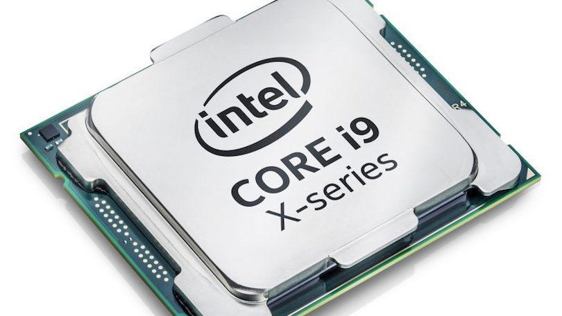
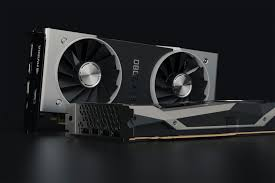
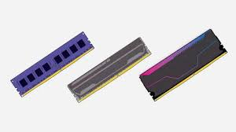
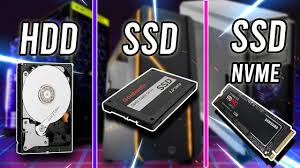
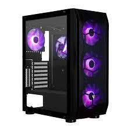

CPU (Procesador)
Familias, generaciones y letras en los modelos.
Tipos / Familias
- AMD Ryzen: Ryzen 3 / 5 / 7 / 9 (de entrada a entusiasta).
- Intel Core: i3 / i5 / i7 / i9 (similar por gamas).
- APUs: CPUs con gráficos integrados (útiles si no quieres GPU dedicada).
Cómo leer un nombre (ejemplo: Ryzen 5 5600X)
- Ryzen 5 → gama media.
- 5600 → serie/ generación (5xxx → 5ª gen / Zen 3).
- X → variante con frecuencia/rendimiento mejorado.
Letras típicas: X (más rápido), G (gráficos integrados), X3D (caché 3D).

GPU (Tarjeta gráfica)
Series, VRAM y significado de sufijos en modelos.
Tipos / Familias
- NVIDIA GeForce: GTX (anterior), RTX (ray-tracing), tarjetas numeradas por generaciones (ex: 20xx, 30xx, 40xx).
- AMD Radeon: RX 5000, RX 6000, RX 7000, etc.
- Segmentos: entrada / media / alta / entusiasta (según serie y VRAM).
Cómo leer un nombre (ejemplo: RTX 3060 Ti)
- RTX → soporte ray-tracing (NVIDIA).
- 3060 → generación y posición en la gama (30xx = generación); número mayor = más potente.
- Ti / Super / XT → variantes con velocidades o núcleos extras.
- VRAM → memoria de video (4GB / 6GB / 8GB / 12GB ... importante para resoluciones altas).

RAM (Memoria)
Tipos (DDR), velocidades y tamaños.
Tipos / Familias
- DDR3 / DDR4 / DDR5: DDR5 es la más nueva; cada generación mejora latencia y ancho de banda.
- SO-DIMM: formato para portátiles.
Cómo elegir / entender números
- Capacidad: 8GB, 16GB, 32GB — más RAM permite multitarea y edición más fluida.
- Velocidad: 2400 / 3200 / 5200 MHz — afecta rendimiento en ciertas cargas (gaming/edición).
- CL (latencia): número más bajo = menor latencia.

Almacenamiento (SSD / HDD)
Tipos (SATA, NVMe), formatos y qué significan.
Tipos / Familias
- HDD: discos mecánicos — barato por GB, más lento.
- SSD SATA: rápido y compatible con la mayoría de placas.
- NVMe / M.2: mucho más rápido (PCIe), ideal para sistema y proyectos.
Cómo leer un modelo (ej: Samsung 980 Pro 1TB)
- Marca y modelo: Samsung 980 Pro (gama / generación).
- 1TB: capacidad.
- PCIe 3.0 / 4.0 / 5.0: interfaz — versiones más nuevas ofrecen mayor velocidad (si la placa lo soporta).
Placa base (Motherboard)
Sockets, chipsets y formatos (ATX, mATX, ITX).
Tipos / Familias
- Formato: ATX (grande), mATX (mediana), ITX (compacta).
- Socket: AM4 / AM5 (AMD), LGA1200 / LGA1700 (Intel) — determina qué CPUs son compatibles.
- Chipset: define características: cantidad de USB, PCIe lanes, overclocking, etc.
Cómo leer especificaciones
- Socket + chipset: p.ej. \"AM5 + X670\" → compatible con CPUs AM5 y funciones avanzadas.
- Ranuras RAM: 2 o 4 slots y máximo soportado (ej: 128GB).
Fuente de poder (PSU)
Watts, certificaciones y modularidad.
Tipos / Familias
- Potencia (W): 450W / 550W / 650W / 750W / más — elige según GPU + CPU.
- Certificación 80 PLUS: Bronze / Silver / Gold / Platinum — eficiencia energética.
- Modular: Full / Semi / No modular — cables desmontables facilitan el montaje.
Cómo leer un modelo (ej: Corsair RM750x)
- RM750x: RM (serie), 750 → potencia en W, x → variante de calidad.
- Recomendación: elegir marca confiable y dejar margen de ~20–30% sobre consumo estimado.

Gabinete (Case)
Formatos, flujo de aire y compatibilidad.
Tipos / Familias
- Formatos: Full tower, ATX mid-tower, mATX, ITX compact.
- Ventilación: front intake, top exhaust, filtros para polvo.
- Compatibilidad: longitudes de GPU, radiadores para refrigeración líquida.
Qué mirar en la ficha técnica
- Soporte GPU(max mm): longitud máxima de la tarjeta gráfica.
- Soporte radiador: dimensiones y posiciones (front/top/rear).
Refrigeración
Por aire vs líquida y qué significan las referencias.
Tipos / Familias
- Air coolers: disipadores con ventilador (buena relación precio/rendimiento).
- AIO (All-In-One): refrigeración líquida cerrada (120/240/360 mm según radiador).
- Custom loop: circuitos líquidos personalizados (más rendimiento, más trabajo).
Qué mirar al elegir
- Tamaño del radiador: 120/240/360 mm → mayor superficie = mejor disipación.
- Compatibilidad con socket: verificar anclajes para tu CPU.